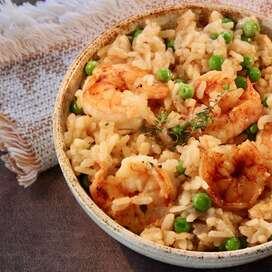

Shrimp Risotto

Ingredients
- Shrimp
- Shallots
- Arborio rice
- White wine
- Vegetable stock
- Frozen peas
- Parmesan cheese
- Unsalted butter
Steps
- Defrost shrimp, pat dry, and add salt and pepper to both sides.
- Heat a large pan on high heat, add 1 to 2 tablespoons of oil, and quickly fry shrimp. Try to flip shrimp only once.
- When shrimp are cooked, place on a tray, or uncrowded on a plate so that they do not continue to cook
- Very finely chop shallots.
- In a small pot, heat 1L of vegetable stock. Stock should not be hot enough to simmer.
- Turn on to medium-low heat, add 1 to 2 tablespoons of oil, and sweat shallots in pan.
- When shallots are translucent, but before they begin to brown, add arborio rice and lightly toast rice kernels. Toast for approximately 2 to 3 minutes. Rice should not turn black, which would mean it's been burnt.
- Add approximately 1 cup of white wine, enough to barely cover all rice. Stir gently, but continuously. At minimum, stir well every 1 to 2 minutes throughout the remainder of this recipe
- When wine nearly completely evaporates, add a second cup of white wine
- When wine nearly evaporates, add approximately 1 cup of vegetable stock from pot, into rice pan.
- This process of waiting for liquid to nearly evaporate, then refilling with vegetable stock will continue until the risotto reaches the right consistency, which is completely up to you! It will likely be 15 to 25 minutes, depending on the heat used. I like my risotto on the edge past al dente, where a portion of the rice will have a bit of hardness to them, while the rest are soft. this provides contrast in the textures.
- By now, the shrimp should have cooled enough to handle. Chop shrimp into large, bite size pieces.
- When the rice reaches the perfect texture for you, add the shrimp, about a half cup of grated parmesan cheese, add 1-2 tablespoons of butter, then put a lid on the pan and let it sit for about 2 minutes
- Plate nice and high into a shallow and wide bowl. Lightly shake the bowl so that the risotto lies flat. Here you can add some garnish like a chip of parmesan standing in the center of the bowl